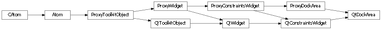

Bases: enaml.widgets.constraints_widget.ConstraintsWidget
A component which aranges dock item children.
The layout of dock items for the area. The layout can also be changed at runtime with the ‘apply_layout()’ method.
The default tab position for newly created dock tabs.
A Stack expands freely in height and width by default
A reference to the ProxyStack widget.

Bases: enaml.qt.qt_constraints_widget.QtConstraintsWidget, enaml.widgets.dock_area.ProxyDockArea
A Qt implementation of an Enaml DockArea.
A reference to the widget created by the proxy.
The docking manager which will drive the dock area.
The event filter which listens for layout requests.